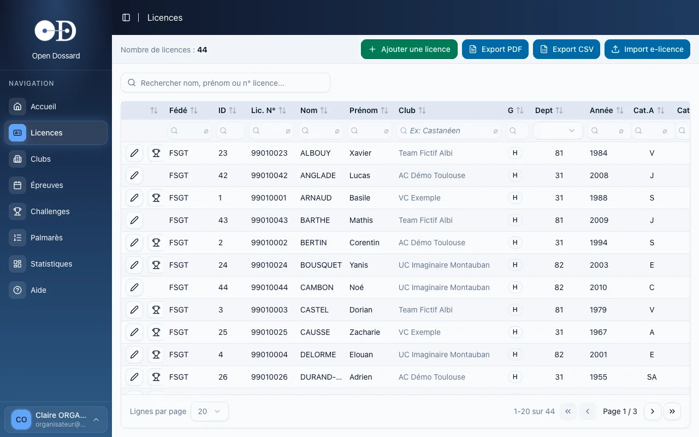
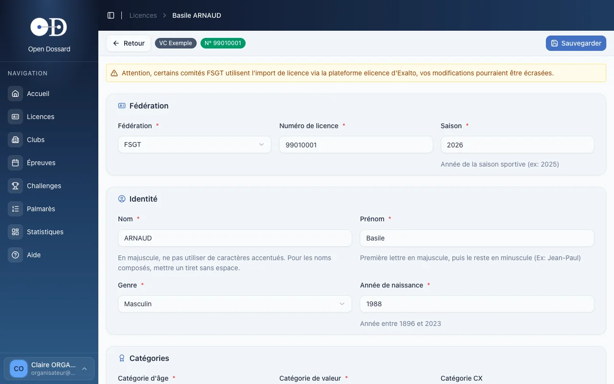

- • La base des licenciés est commune à tous les organisateurs : elle n'est pas limitée à vos clubs.
- • Un coureur absent de la base ? Créez sa fiche, même s'il n'a pas de licence.
- • Open Dossard vous prévient si le coureur semble déjà exister.
Rechercher un coureur
- Dans le menu, cliquez sur Licences.
- Tapez le nom, le prénom ou le numéro de licence dans la barre de recherche, ou utilisez les filtres sous chaque colonne (fédération, club, catégorie…).
- Sur la ligne du coureur, cliquez sur le crayon pour ouvrir sa fiche, ou sur l'icône Palmarès pour voir ses résultats.

Les boutons Export PDF et Export CSV téléchargent la liste des licenciés.
Ajouter un coureur
- Cliquez sur Ajouter une licence.
- Choisissez d'abord la fédération : les champs suivants s'adaptent à ce choix.
- Renseignez le numéro de licence, la saison, l'identité, le département et le club, puis les catégories.
- Cliquez sur Créer la licence.

Règles de saisie
- Nom en majuscules, sans accents ; tiret sans espace pour les noms composés (DURAND-SOL) ;
- Prénom avec une majuscule initiale (Jean-Paul) ;
- Saison sur quatre chiffres (2026) ;
- catégorie d'âge et catégorie de valeur selon la fédération. La catégorie cyclo-cross est facultative.
Ces règles évitent les doublons et garantissent des classements et des palmarès justes.
Coureur non licencié
Choisissez la fédération Non Licencié : le numéro de licence et le club disparaissent, la saison et la catégorie de valeur deviennent facultatives. Un non-licencié ne peut être engagé que sur une épreuve ouverte aux non licenciés.
Si un coureur de même nom, même prénom, même fédération et même département existe déjà, une fenêtre vous le signale avec un lien Voir la fiche. Vérifiez avant de cliquer sur Créer quand même : le plus souvent, il suffit d'utiliser la fiche existante.
Corriger ou supprimer une fiche
Ouvrez la fiche, modifiez les champs voulus, puis cliquez sur Sauvegarder. Le cadre Commentaires, en bas de fiche, accueille les informations utiles à l'équipe (certificat médical, changement de club…).
Certains comités FSGT importent leurs licences depuis la plateforme e-licence d'Exalto. Pour ces licences, vos corrections risquent d'être écrasées au prochain import : signalez plutôt l'erreur au comité. L'import lui-même est réservé aux administrateurs.
L'icône de corbeille supprime une licence, à condition qu'elle n'ait jamais été engagée sur une épreuve ni classée dans un challenge clôturé. Dans le cas contraire, la suppression est impossible, pour préserver l'historique.